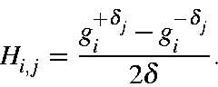
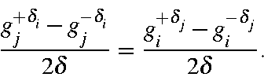
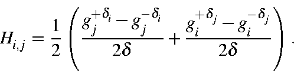
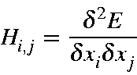
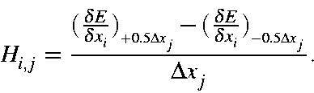
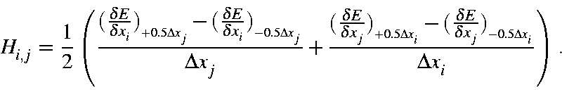
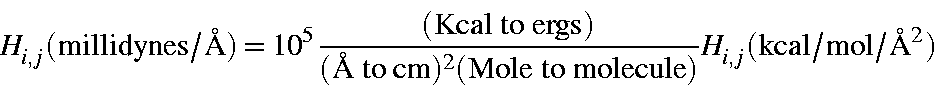
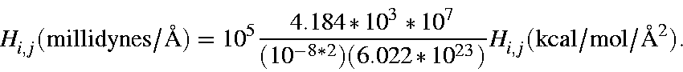
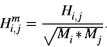
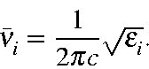

The Hessian matrix is the matrix of second derivatives of the energy with respect to geometry. The most important Hessian is that used in the FORCE calculation. Normal modes are expressed as Cartesian displacements, consequently the Hessian is based on Cartesian rather than internal coordinates.
Although first derivatives are relatively easy to calculate, second derivatives are not. The simplest, although not an elegant, way to calculate [73] second derivatives is to calculate first derivatives for a given geometry, then perturb the geometry, do an SCF calculation on the new geometry, and re-calculate the derivatives. The second derivatives can then be calculated from the difference of the two first derivatives divided by the step size. This method, which is used in the EigenFollowing routine, is called `single-sided' derivatives.
The Hessian is quite sensitive to geometry, and should only be evaluated at stationary points. Because of this sensitivity, "double-sided" derivatives are used:

Note the asymmetry in the treatment of the Cartesian coordinates i and j. It can be shown that

To help improve precision, the Hessian is calculated from






In order to calculate the vibrational frequencies, the Hessian matrix is first
mass-weighted:

Then the Hessian is converted from millidynes per Ångstrom to dynes per centimeter by multiplying by 105.
Diagonalization of this matrix yields eigenvalues, e,
which represent
the quantities
(k/m)1/2 ,
from which the vibrational frequencies can be
calculated:
